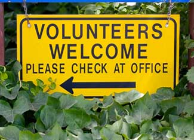

From parades to volunteer activities, check out these Web sites to find what's happening on Earth Day in your neighborhood.
April is officially Earth Month, and the great highpoint of the month is Earth Day, April 22. During the 364 unofficial Earth Days, you probably recycle, work to reduce your water consumption and utilize a number of other tricks for living lightly. But April 22 is a day to come together with millions of others from around the globe - to celebrate this glorious planet and all of its life.
It’s also the perfect opportunity to learn even more ways you can help: new tips for better living, volunteer and education opportunities, and much more. All you have to do is find the right folks and pencil in a few fun events, so get started with these resources:
Earth Day Network. Search by event, date or location to find Earth Day activities, from festivals and tree-planting parties to parades and fashion shows.
Envirolink. Browse their online Earth Day 2009 Calendar to check out events around the United States. Each event is linked to an information page with event details and contact information. Search the calendar by city or state.
Environmental Protection Agency. Search by region to find events and volunteer opportunities. Be sure to check out their Earth Day Take Home Kit and the Environmental Kids Club for games, activities and information. Send your questions about the environment to Ask EPA. Kids can sign up to become Planet Protectors, whose mission is to better the world by making less trash and help others learn to reduce, reuse and recycle.
EarthDay.gov. This site is another good resource for government events, and has sections specifically for teachers and children. Find eco-friendly tips for home and work, plus volunteer opportunities and links to additional U.S. government Earth Day websites.
Mother Earth News Event Calendar. Check out events posted by our readers and add your own to the Mother Earth News Event Calendar.
Take a few minutes to really explore each of the above sites. A number of them invite readers to add new events and offer tips for organizing your own Earth Day event. With just a few clicks, you can find a wealth of information for a fun Earth Day - on April 22 and beyond!
|
 ISTOCKPHOTO Whether you're cleaning up the local park or attending a festival, there are a number of ways to have fun celebrating Earth Day. |
|
|